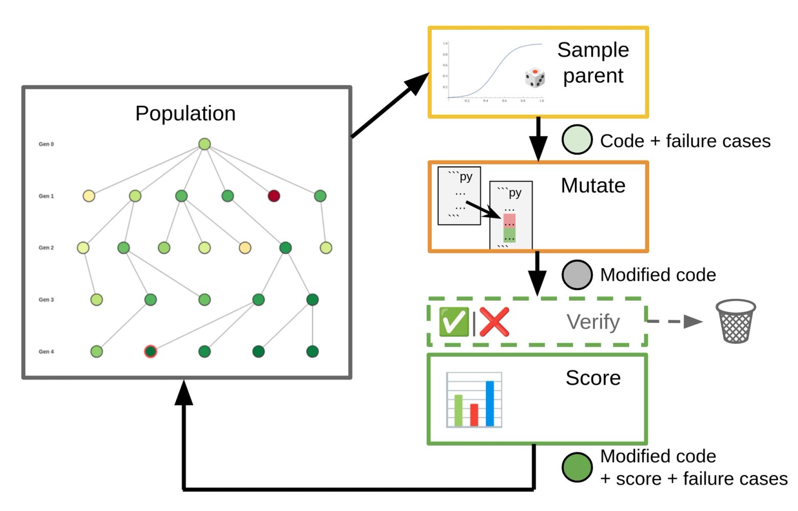
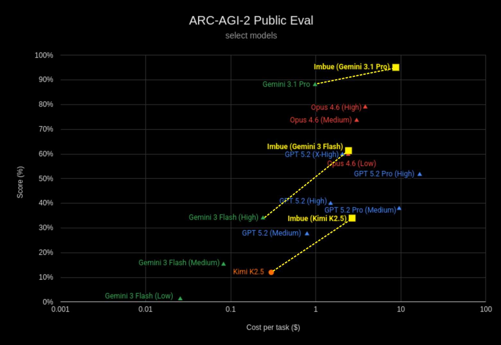

Darwinian Evolver: LLM-Based Evolution as a Universal Code Optimizer
Not a paper: Imbue's blog "LLM-based Evolution as a Universal Optimizer" (27 Feb 2026, updated 14 May 2026 — Daniel Mewes, Nayana Bannur, Catherine Kim), its companion "Beating ARC-AGI-2 with Code Evolution", and the imbue-ai/darwinian_evolver repo. Grounded in the full text of both posts and the README. No peer review, no ablations — weigh the evidence accordingly.
TL;DR
- Darwinian Evolver is a problem-agnostic LLM-evolution framework built on a three-part contract: an organism (any code or prompt), an evaluator (a numeric score and concrete failure cases), and a mutator (an LLM rewriting the organism conditioned on those failures). It derives from Sakana's Darwin Gödel Machines and drops the Gödel half — the README says it "doesn't necessarily include self-improvement."
- The machinery is DGM's parent-sampling formula plus five efficiency refinements: a dynamic percentile sigmoid midpoint, batch mutations (an explicit SGD-minibatch analogy), separate train/scoring datasets, a learning log of diff→score-delta pairs, many-parent crossover, and post-mutation verification — the last claimed to give "more than 10-fold improvement in both time and cost efficiency."
- On ARC-AGI-2 public eval, identical framework and prompts lift Gemini 3.1 Pro 88.1% → 95.1% at $8.71/task, Gemini 3 Flash 34.0% → 61.4% at $2.42/task, and Kimi K2.5 12.1% → 34.0% at $2.67/task — the last claimed as the best open-weights result, reproduction pinned to exact commit hashes.
Why this matters
Read this as a harness-optimization system with the recursion switched off on purpose. The evolving object is an artifact the harness operates on — a prompt template, a block of code, "or even a git hash" — while the machinery doing the evolving (parent sampling, mutator prompts, verification gate, scoring pipeline) is hand-written and frozen for the whole run. The README is explicit: this "doesn't necessarily include self-improvement." It is Darwin Gödel Machine's search apparatus pointed outward at an artifact instead of inward at itself.
That subtraction is the interesting part. Harness optimization's central question is how much of a reported gain comes from the harness getting better versus a fixed harness searching harder; DGM bundled the two and credited both in ablation (50.0% full, 39.0% without self-improvement on SWE-bench Verified). Imbue keeps the archive, drops the recursion, engineers the mutation operator hard, and still reaches 95.1% on ARC-AGI-2 with Gemini 3.1 Pro and a 2.8× multiplier on Kimi K2.5. Whatever recursion is worth, a static harness running population search over artifacts already captures a great deal of it.
Scope matters too. The unit of variation is wide enough to include harness code — that is precisely why Imbue built it (below) — and the repo supports self-improving mutators in which the organism generates its own mutation. Every published result uses the static path. The distance between "can evolve a harness" and "evolved an artifact" is what to hold onto whenever these numbers get cited as evidence about self-improvement.
The core idea
Imbue frames LLM-driven evolution as a near-universal optimizer with strikingly weak admission criteria: any problem qualifies if (a) candidates can be understood and modified by an LLM, and (b) quality can be scored "at least approximately." Nothing need be differentiable, and noisy LLM-judge objectives are tolerable because stochastic population search absorbs evaluation noise that hill-climbing cannot. Notably, the evolution process is "in principle, open ended" — the stated ceilings are the scoring dataset saturating and the mutator LLM's own strength, and Imbue claims their implementation "exceed[s] the base model's one-shot strength by a wide margin."

Figure from the Imbue blog: sample parent (sigmoid-weighted) → mutate (code + failure cases) → verify (dashed: optional, discards non-improvements before expensive scoring) → score, feeding modified code plus score plus failure cases back into a generational population.How it works
The contract. A Problem is a triple: initial_organism, evaluator, mutators. The Organism holds whatever evolves — a prompt template, a block of code, "or even a git hash." The Evaluator returns a numeric score plus trainable_failure_cases; the Mutator receives (organism, failure_cases, learning_log_entries) and returns children. The design tolerates weak components: "if your mutator only produces a better solution 20% of the time, Darwinian-evolver can still leverage those successes."
Parent sampling follows DGM's Appendix A.2 formulas with Imbue's extension. For organism \(a_i\) with fitness \(\alpha_i\) and existing-children count \(n_i\):
\(s_i\) is sigmoid-scaled fitness with sharpness \(\lambda\) (range 5–20, default 10) centred on \(\alpha_{pXX}\), the XXth percentile of current population scores (default p75); \(h_i\) is a novelty bonus decaying as a parent accumulates children, with novelty weight \(\tau\); the weight is their product.
Two properties do the work. The dynamic midpoint is Imbue's stated improvement over DGM: recomputing \(\alpha_{pXX}\) each iteration keeps the population in the sigmoid's high-gradient region throughout, "even when the achievable score range is not known upfront." And \(w_i\) is strictly positive, so low scorers are still occasionally sampled — the stated mechanism for escaping local maxima — while \(h_i\) "limits the amount of resources that can be spent on locally fit, but ultimately unsuccessful evolutionary dead ends."
What the mutator sees. DGM passes the parent's code plus one random failure case; Imbue extends this four ways. Batch mutations (--batch_size 2–5) expose several failures at once — "roughly equivalent to the use of mini-batches in Stochastic Gradient Descent" — at the documented cost of reduced diversity and degraded LLM output when overloaded. Separate training and scoring datasets draw failure cases from one split and fitness from another, which "helps discourage mutations that are narrowly geared towards only the provided failure cases." The learning log records each attempted change as a diff plus its observed score delta, exposing a genealogical neighbourhood of these to the mutator (none by default, ancestors, or neighborhood-N). Crossover samples multiple parents — ShinkaEvolve's variant is capped at two — and asks the LLM to unify their best ideas.
Post-mutation verification is the efficiency lever Imbue emphasises most. Late in a run most mutations improve nothing, and scoring them is expensive and floods the population so a rare breakthrough is less likely to be sampled. The gate: re-run the child only on the parent's failure cases passed to the mutator, discard if none improved. The README is honest about the costs — reduced diversity, bias "towards mutations that are overly specific to fixing failures on just one particular data point," a need for low-variance per-datapoint evaluation, and outright breakage where a failure needs a sequence of mutations. It also distinguishes static from self-improving mutators — the organism generating its own mutation, as in DGM — and supports both.
# Darwinian Evolver main loop (reconstructed from the blog + README)
Given: initial organism a0, Evaluator E, Mutators Ms,
sharpness lambda=10, midpoint pXX=p75, novelty weight tau,
batch_size b, learning-log strategy L, verify_mutations flag
population <- {a0 with score E(a0)}
for iteration = 1..num_iterations:
alpha_pXX <- percentile(XX, scores in population) # recomputed each iter
for each of num_parents_per_iteration:
s_i <- sigmoid(lambda * (alpha_i - alpha_pXX)) # for all i
h_i <- 1 / (1 + tau * n_i)
parent <- sample(population, weights = s_i * h_i) # crossover: sample k>1
cases <- sample_failure_cases(parent.result, b, by failure_type_weights)
log <- learning_log_entries(parent, strategy = L)
child <- Mutator.mutate(parent, cases, log) # LLM: diagnose, then implement
if verify_mutations and not E.verify_mutation(child, cases):
discard child # skip the expensive full eval
continue
child.result <- E.evaluate(child) # score + new failure cases
record learning-log entry (change summary, score delta vs parent)
population <- population + {child}
return argmax score over population
The ARC-AGI-2 instantiation shows what a serious problem specification costs. An organism is a Python transform function on grids; the root organism for every task is the identity. Each task gets its own independent population, at most 16 iterations, early-stopping once two solutions cross a threshold; the two best-scoring distinct outputs are submitted. The mutator sees example pairs, challenge inputs, parent code, per-example accuracy, and a grid rendering with incorrect cells highlighted, plus three prompting tricks: natural-language explanation first, differential example formatting (when dimensions match, show only changed cells), and randomized mutation strength (randomly request a small incremental change or a major reinterpretation). Crossover runs 25% of the time with three parents.
Fitness is the interesting part, because ARC tasks are "heavily under-constrained" — infinitely many programs fit the examples while disagreeing on the challenge inputs:
Reconstruction of the blog's prose as an equation. Correctness is cell-level partial credit on example pairs, rescaled so the identity organism sits at 0.2 and a fully correct output at 0.9 (clamped below 0), plus a +0.1 bonus for full correctness; transfer is a reasoning model's judgment of generalization to the challenge inputs; simplicity combines hard-coded-constant count, hard-coded-color count, and code length.
Both auxiliary scores are generalization proxies that never touch challenge outputs — among programs solving the examples correctly, simpler ones "have a slightly better chance" of predicting the challenge inputs correctly.
Results
All numbers are on the ARC-AGI-2 public evaluation set (the semi-private submission was never evaluated — community submissions were on hold). All three runs used identical code and prompts, varying only the backbone.

Figure from the Imbue ARC post: yellow squares are evolution runs, each dashed-linked to its base model. The x-axis is log-scale cost per task — the vertical lifts are large, and so are the horizontal ones.Gemini 3.1 Pro: 88.1% → 95.1% (+7.0) at $8.71/task, framed as competitive with the then-current public-eval SOTA of 97.9% at $11.77/task (Confluence Lab) and undercutting Gemini 3 Deep Think ($13.62/task semi-private) and other "refinement" entries (>$30/task). Imbue attributes the smaller relative gain to saturation near the ~90% range.
Gemini 3 Flash: 34.0% → 61.4% (+27.4) at $2.42/task, a 1.8× multiplier described as comparable in score and cost to much stronger models like Opus 4.6 (Low) or GPT 5.2 (X-High). Kimi K2.5: 12.1% → 34.0% (+21.9) at $2.67/task, a 2.8× multiplier and the headline claim — "the highest performing open-source / open-weights solution for ARC-AGI-2 available today," exceeding GPT 5.2 at Medium effort.
The pattern across all three is the real finding: the weaker the base model, the larger the multiplier, gains compressing near the ceiling.
Imbue distinguishes itself from Poetiq, which "selects results based on consensus, while our solution uses an evolutionary approach that emphasizes divergence instead of convergence." Not reported anywhere: ablations of any of the five refinements, seed variance, run counts, or any baseline beyond the base model's published one-shot number.
How it connects
- darwin-godel-machine — the hub of this cluster and the direct ancestor; the README sends implementers to DGM's Appendix A.2 for sampling formulas and A.3 for self-improve prompts. What Imbue removed is the finding: keep the archive, drop the recursion.
- Harness optimization with the recursion left on. recursive-harness-self-improvement makes the same "LLM rewrites a text artifact" move, but on a prompt-level specification of the agent loop. darwinx-harness-evolution is this archive at harness granularity, with preserve-and-extend admission and cross-lineage merges; its TerminalWorld gap (in-loop proxy saturating at 1.000, held-out 68.3%) is the overfitting a per-instance ARC run can never surface. living-harness evolves memory and a state graph behind commit gates instead of a code archive; evoharness-rl is the one entry that unfreezes the weights.
- meta-harness — the feedback-bandwidth contrast: ~10 MTok of raw execution traces per iteration, ablated as the ingredient (50.0 vs 34.6 median against scores-only), versus a scalar plus a handful of failure cases here, with the learning log the closest analogue and off by default. harness-handbook names the bottleneck Imbue dodges by keeping organisms tiny: behavior localization in a real harness codebase.
- harness-generalization — a direct prior against "universal optimizer": 30 budget-matched harnesses, 12 model–problem pairs, no fixed harness reliably superior. rethinking-harness-evolution is the mandatory skeptic and a harness-optimization argument in its own right — under matched budgets, harness evolution lost to plain test-time scaling in every Terminal-Bench 2.1 setting. Its pass@1 vs pass@5 diagnostic applies directly (two submissions plus "two best-scoring distinct outputs" is pass@2; verification is another selection stage), though its generalization kill shot cannot land on per-instance search — that maps onto its harness scaling arm, the one it found surprisingly strong.
- Siblings. adaevolve is the sharpest complement: Imbue's knobs (
--sharpness,--midpoint_score,--batch_size,--learning_log,--verify_mutations) are exactly the static schedule it exists to eliminate, and the dynamic percentile midpoint is a one-level version of its Level 1. Also adaexplore, asi-evolve, and the two that move the unit of evolution — coral-multi-agent-evolution (agents over shared memory: harness-level) and saga-goal-evolving (the objective) — with evolving-benchmarks and env-generator-dynamics moving the target itself. Background: AlphaEvolve, ShinkaEvolve. aide2-rsi-evidence is the evidence-quality peer — another company blog, but claiming RSI outright where Imbue never does.
Critical take
Evidence quality gates everything else. A vendor blog plus a repository, and the gap in standing against the peer-reviewed work in this cluster is not a formality: no review, no variance, no seed or run counts, no baseline beyond each backbone's published one-shot number, and no ablation of any of the five refinements claimed over DGM. The "more than 10-fold improvement in both time and cost efficiency" attributed to post-mutation verification is the most quotable number in the post and has no table behind it. Read every figure as single-run, self-reported and self-selected-best until someone re-runs it — and note that the README is notably more candid than the blog that gets cited.
The contributions are mutation efficiency, not search theory. What is genuinely new relative to DGM: recomputing the sigmoid midpoint each iteration, batching failure cases into one prompt, splitting the failure-case and fitness datasets, logging diff→score-delta pairs, crossing over more than two parents, and gating children on a cheap re-run before full evaluation. Each makes an individual LLM call convert into progress more often; none changes what the search explores or how the population is structured, since the archive, the fitness×novelty weighting and the generational loop are DGM's. So the transferable claim is that the mutation operator is the tunable part of an evolutionary harness, not that this archive-and-sampling scheme is the right one — and with nothing ablated, even the ranking among the six is unknown.
Search gains and method gains are never separated. Weaker base model, larger multiplier, gains compressing near the ceiling: that is the signature of search converting compute into capability, which is why the missing control hurts. On Imbue's own chart Gemini 3.1 Pro's base point sits near $1/task against $8.71 evolved — eight to nine attempts' worth of budget, with the fitness function already implemented as a selector and ARC's two-submission rule making selection free. Nothing distinguishes better program-space search from plain repeated sampling under verifier selection, the comparison rethinking-harness-evolution found decisive against evolution elsewhere. It bites hardest on Kimi K2.5, where 2.8× arrives with an order-of-magnitude budget increase on a model with large pass@k headroom. Token counts are never reported, and no arm strips the population machinery while keeping iterative refinement, so "evolution" and "sequential self-repair" stay fused.
Two structural caveats. ARC here is per-instance search with no reusable artifact: each task gets its own population, discarded at the end. Defensible for a puzzle benchmark, but the opposite of what harness optimization is for, and it means these results say nothing about whether the framework's harness-evolving mode works. And "universal optimizer" is undercut by the ARC specification itself: the framework is universal, the performance rests on ARC-specific hand-design — three-term fitness with tuned weights, the identity root organism, three prompting tricks, 25% crossover with three parents.
If you remember three things
- Darwinian Evolver is DGM minus the Gödel: archive-based population search with sigmoid-fitness × novelty parent sampling and failure-case-conditioned LLM mutation, deliberately without self-improvement — and it still delivers 2.8× on Kimi K2.5 and 95.1% on Gemini 3.1 Pro. The recursion was not the load-bearing part.
- The contributions are all mutation efficiency, not search theory: dynamic percentile midpoints, minibatched failure cases, split train/score sets, a learning log, many-parent crossover, and a verification gate claimed to cut cost and time 10×. None are ablated.
- What it evolves is the artifact, not the harness: mutators, fitness weights and sampling machinery stay hand-written and frozen, the ARC population is discarded per task, and no budget-matched control separates better search from more search. Reproducibility is the best dimension here — public repo, full ARC spec, pinned commits
1a50d69…and482ac63…— so that control is cheap for someone to run.